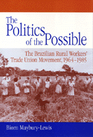

<body bgcolor="#FFFFFF" text="#000000" link="#0000FF" vlink="#CC0000" alink="#CC0000"><center><hr width="350" size="1" align="center" noshade>How agrarian reform and unionization was achieved despite Brazil's military regime<hr width="350" size="1" align="center" noshade><p><a href="https://cdcshoppingcart.uchicago.edu/Cart/ChicagoBook.aspx?ISBN=9781566391665&&PRESS=temple" target="_top">Buy this book!</a> | <a href="https://cdcshoppingcart.uchicago.edu/Cart/Cart.aspx?PRESS=temple" target="_top">View Cart</a> | <a href="https://cdcshoppingcart.uchicago.edu/Cart/Cart.aspx?PRESS=temple" target="_top">Check Out</a></p><p></p></center><!--none//--><h1>The Politics of the Possible</h1>
<H2>The Brazilian Rural Workers' Trade Union Movement, 1964-1985</H2>
<h3>Biorn Maybury-Lewis</h3>
<P>cloth 1-56639-166-0 $80.50, Oct 94, <FONT COLOR=#990033>Out of Stock Unavailable</FONT>
<br>paper 1-56639-167-9 $35.95, Oct 94, <FONT COLOR=#990033>Available</FONT>
<BR> 320 pp
6x9
7&nbsp;tables 1&nbsp;figure
</P><BLOCKQUOTE><I>"This study of the emergence of the Brazilian rural trade union movement is unique in its almost tactile appreciation of its topic. In addition, many such case studies focus on a single geographic area or community and do not provide a view of broader movements or regional variations. This book is remarkable for its appreciation of the degree of autonomous agenda formulation and mobilization that exists among peasants. Maybury-Lewis has broken away from old stereotypes and written a path-breaking study."</I>
<br>&#151<b>Margaret E. Crahan</b>, University of Pittsburgh<I></I></BLOCKQUOTE>
<p>Despite the repressive military dictatorship in Brazil from 1964 to 1985, rural workers' trade unions flourished. During that period, 2,800 trade unions, representing 8 million laborers, were founded. Biorn Maybury-Lewis examines how union leaders carved out a place for themselves in the political order of the country, and how other progressive movements can succeed in comparable situation.
<p>Maybury-Lewis analyzes the institutional and political tools used by rural laborers, and what unionization meant for them. Though traditionally viewed as among the weakest member of society, rural workers proved able to confront, and even use to their benefit, the government's stifling corporatist legislation. They succeeded in asserting themselves as a powerful minority for the first time in Brazilian history, in spite of the military regime's suppressive Institutional Acts that suspended numerous civil and political rights and shut down Congress.
<p>In a period when similar authoritarian regimes in Chile and Argentina crushed social movements, Brazil's rural workers mobilized on behalf of land, salary, and workplace disputes. While facing the potential threat of murder, rape, illegal arrest, kidnapping, slave labor, and other human rights violations, they succeeded by employing what Maybury-Lewis terms "the politics of the possible": the capacity to evaluate and dodge repressive measures, to keep alive the grassroots struggle, and to turn to their advantage institutional rules designed to suppress labor initiatives. Their story contributes to our knowledge of Latin America's contemporary agrarian struggles as well as offering a case study of how social movements can withstand political repression in the most unlikely circumstances.
<BR>&nbsp;<h2>Contents</h2><P>
<p>Tables and Figures
<br>Preface
<br>Introduction
<p><b>Part I: Historical and Theoretical Framework</b>
<br>1. Posing the Problem: Rural Union Development under Dictatorship, 1964-1985
<br>2. Solving the Problem: Explaining Progressive Rural Unionization in the 1964-1985 Period
<p><b>Part II: Six Case Studies</b>
<br>3. Nazar� da Mata, Pernambuco: Birthplace of the CONTAG Line
<br>4. Capivar�, S�o Paulo: Conservative Unionism of the Juo� Rotta Line
<br>5. Porto Nacional, Goi�s: Frontier Development, <I>Posseiros</I> and <I>Grileiros</I>
<br>6. Cangu��, Rio Grande do Sul: <I>Assistencialismo</I> in Theory and Practice
<br>7. Mag�, Rio de Janeiro: <I>Posseiros</I> of the Urban Periphery
<br>8. Santa Cruz Cabr�lia, Bahia: Union Radicalism on Brazil's First and Last Frontier
<br>9. Conclusion: Grassroots Movements Confronting State Apparatuses: Possibilities and Constraints in Comparative Perspective
<p>Appendix A: Statistical Summary of the Development of the Rural Trade Union Movement in Brazil, 1960-1986
<br>Appendix B: Interview with Francisco "Chico" Mendes, Xapur�, Acre, Brazil, November 1988
<br>Glossary
<br>Notes
<br>Bibliography
<br>Index
</P><BR>&nbsp;<H2>About the Author(s)</H2>
<P><b>Biorn Maybury-Lewis</b> is Professor of Political Science at the University of Arizona.</P>
<BR><H2>Subject Categories</H2>
<p><A HREF="/tempress/labor.html" TARGET="_top">Labor Studies and Work</a>
<BR><A HREF="/tempress/latin.html" TARGET="_top">Latin American/Caribbean Studies</a>
</p>
<p align="center"><a href="https://cdcshoppingcart.uchicago.edu/Cart/ChicagoBook.aspx?ISBN=9781566391665&&PRESS=temple" target="_top">Buy this book!</a> | <a href="https://cdcshoppingcart.uchicago.edu/Cart/Cart.aspx?PRESS=temple" target="_top">View Cart</a> | <a href="https://cdcshoppingcart.uchicago.edu/Cart/Cart.aspx?PRESS=temple" target="_top">Check Out</a></p><p><font face="Arial" size="1"><a href="copyright.html" onMouseOver="window.status='Web Copyright Policy';return true;" onMouseOut="window.status=''" title="Web Copyright Policy">&copy;</a> 2015 <a href="http://www.temple.edu" target="new" onMouseOver="window.status='Link to Temple University home page';return true;" onMouseOut="window.status=''" title="Link to Temple University home page">Temple University</a>. All Rights Reserved. http://www.temple.edu/tempress/titles/973_reg.html</font></p>